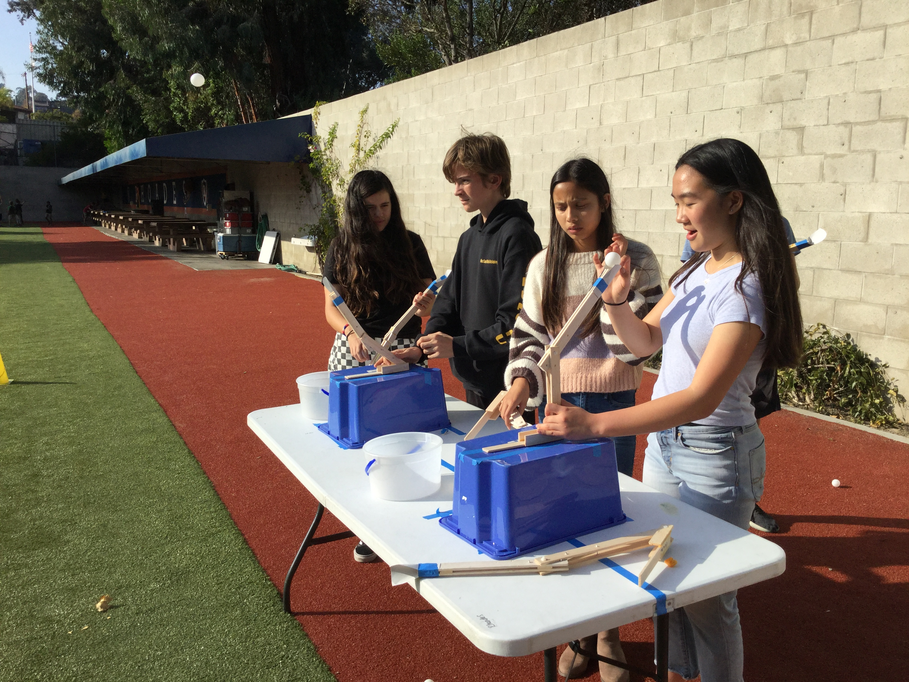
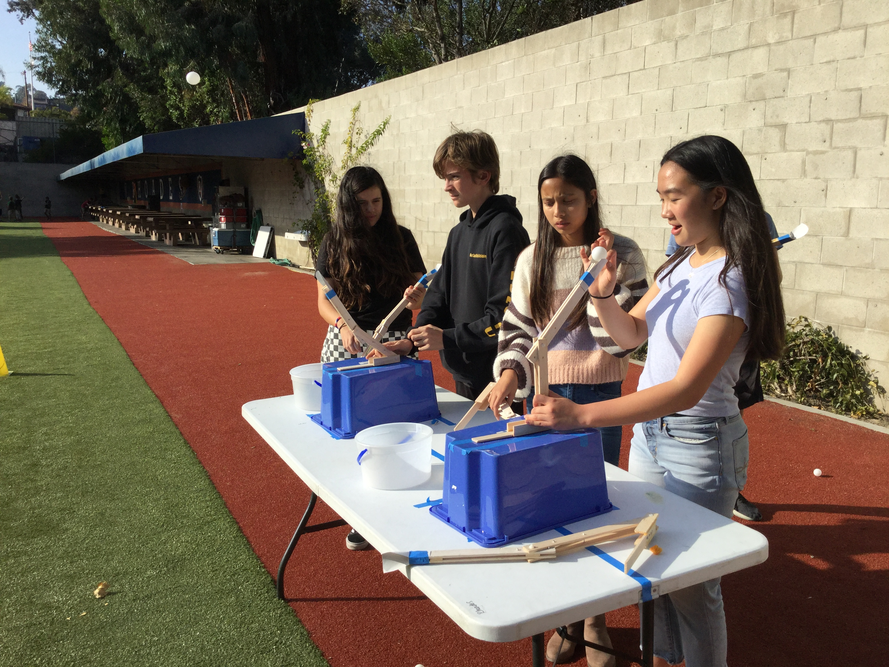
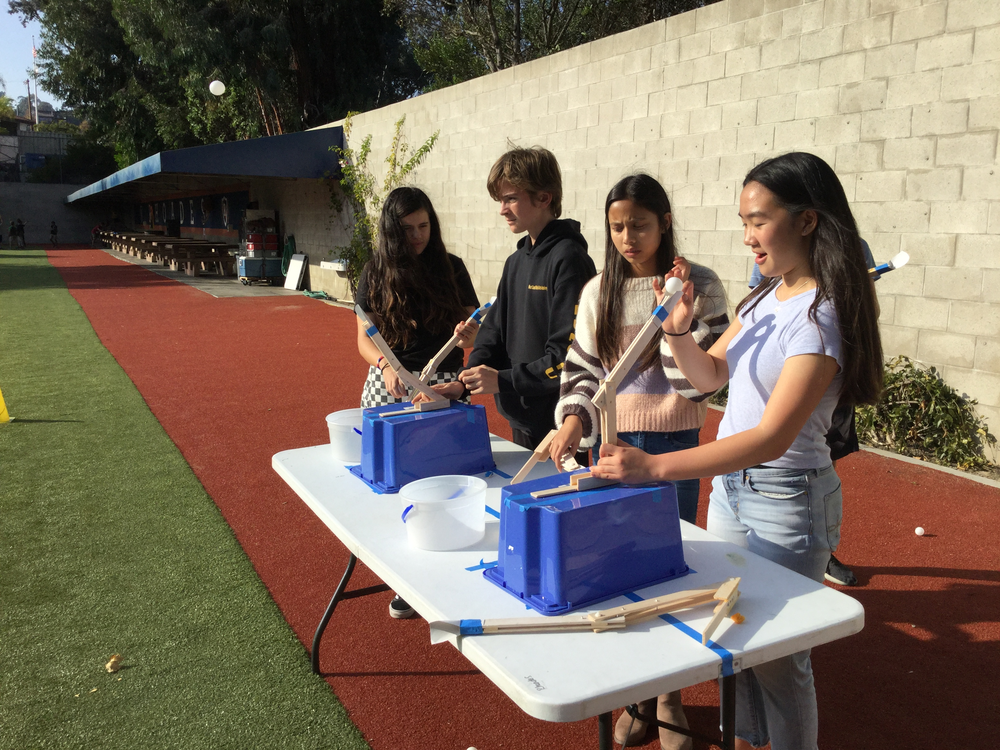
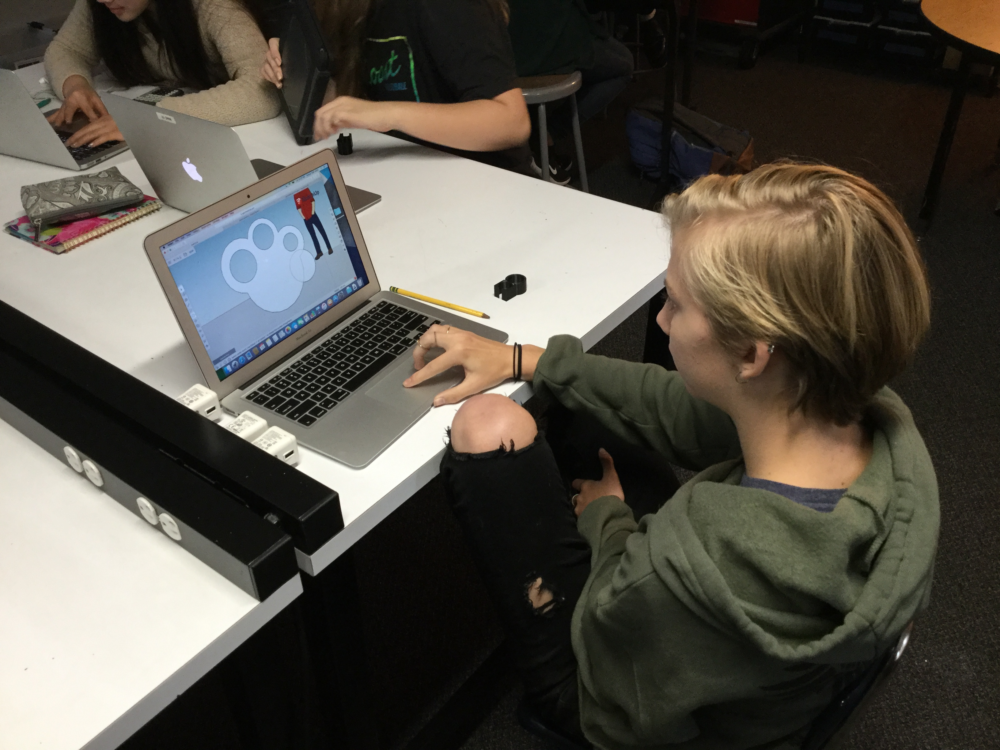
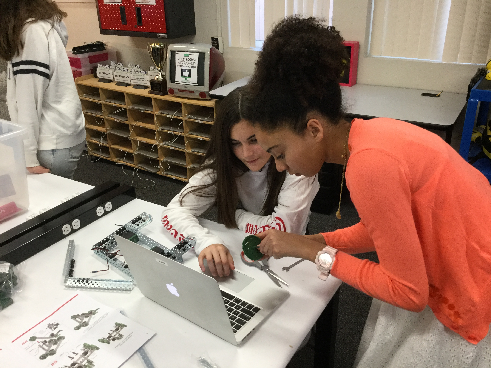
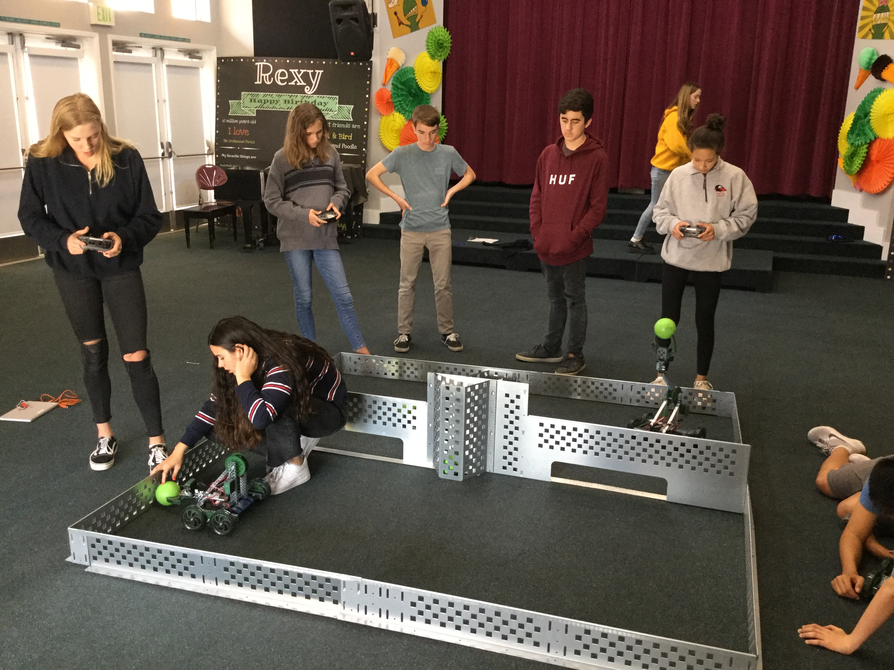

We learned how to adjust prosthetic arms digitally, then competed in who could get it to launch a ball closest to the target.
Here's where we learned about prosthetics

We learned about 3D modeling through videos. We then made our own rings that have a useful function and printed them out.
SketchUp


We built and then programmed robots to compete in a game of swept away.
 
Here is an example of our code: #pragma config(Sensor, dgtl3, sensor2, sensorTouch) #pragma config(Motor, port1, motor1, tmotorVex393_HBridge, openLoop) #pragma config(Motor, port6, clawmotor, tmotorVex393_MC29, openLoop) #pragma config(Motor, port7, armmotor, tmotorVex393_MC29, openLoop) #pragma config(Motor, port10, motor2, tmotorVex393_HBridge, openLoop) //*!!Code automatically generated by 'ROBOTC' configuration wizard !!*// task main() { while(true) { // Joystic Control: motor[port1] = vexRT[Ch3]; //Motor port 2 speed is determined by Ch2 on the VEXnet Transmitter motor[port10] = vexRT[Ch2]; //Motor port 3 speed is determined by Ch3 on the VEXnet Transmitter // Button Control: if(vexRT[Btn5U] == 1) //If button 5U is pressed: { motor[port6] = 32; //run motor port 5 at quarter speed (i.e. lift an arm) }
We used a mix of Khan Academy and StudioWeb to learn HTML and CSS, then used those skills to create this website.